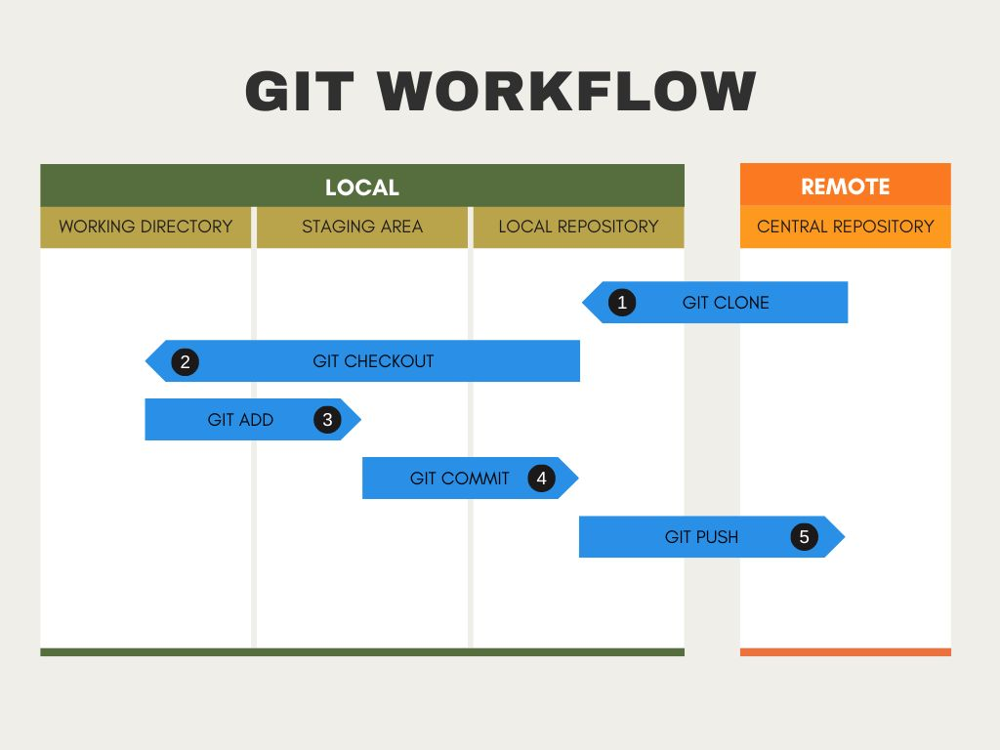

本repo用來熟悉git(一種版本控制軟體) 操作
github 修改
- git status
紅字代表他在工作區(work),還沒進追蹤區(staging) 也未受追蹤(untrcking)
綠字代表檔案在staging 受追蹤(tracking)
nothing to commit 代表三個區同步
git add 檔案名稱 或 git add .
建議只用 git add . 一點代表是所有新增、刪除、修改的任意檔案
git commit -m "更改訊息,提示程式員"
git push
git branch 列出所有版本git branch v1 =>將目前的REPO新增一個版本v1git branch -d 名稱 =>刪除版本git branch -m 舊名稱 新名稱 版本改名git checkout v1 切換版本v1git checkout main 切換到主版本main有時候某些檔案或資料夾不要上傳
這個時候需要.gitignore
利用AI找範例example .gitignore for python project
情境1. 還沒有第一次上傳, 情境2. 已經上傳， 這時候會發現不起作用
git rm -rf --cache .
git add .
git commit -m ....
